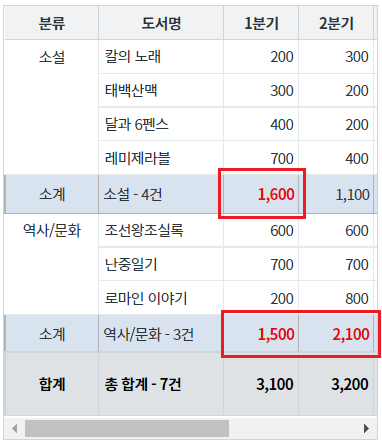
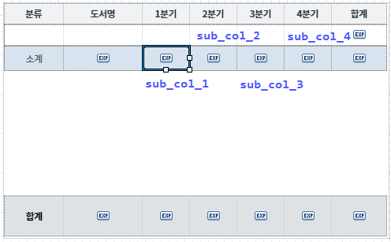
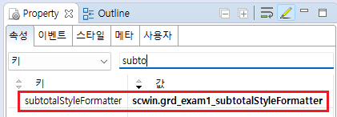
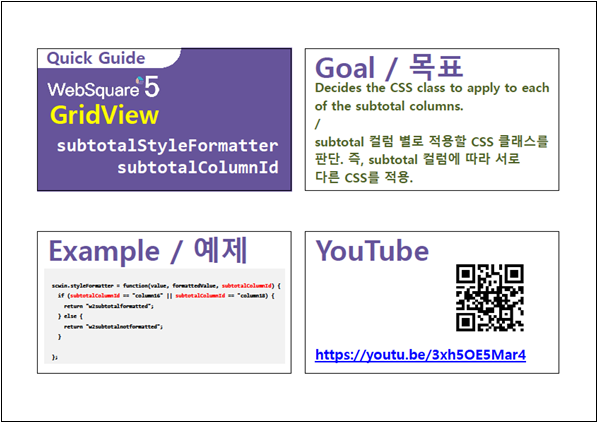

GridView의 소계(subtotal) 컬럼을 조건에 따라 class를 적용하는 예제입니다.
조건에 따라 소계(subtotal) 컬럼에 class 적용하기
소계(subtotal)의 값이 1500 이상인 경우만 굵고 붉은 글자로 표시됨을 확인합니다.
그림 1.[브라우저(Chrome) 실행 예시]

GridView와 연결된 DataList 생성 및 연결 방법과
소계(subtotal) 생성 방법은 생략되었습니다.
css 파일에 아래와 같이 class를 정의합니다.
.ws5_example_txt_red2 { color: #e10e0e !important; font-weight: bold !important; }
1분기, 2분기, 3분기, 4분기 소계(subtotal) 컬럼의 ID를 아래와 같이 정의합니다.
1분기 소계 컬럼 ID : "sub_col_1"
2분기 소계 컬럼 ID : "sub_col_2"
3분기 소계 컬럼 ID : "sub_col_3"
4분기 소계 컬럼 ID : "sub_col_4"
그림 2.[웹스퀘어5 SP5 스튜디오의 Design 탭 예시 - 소계 컬럼 ID 예시]

GridView의 속성 "subtotalStyleFormatter"에 사용할 함수명을 정의합니다.
이 예제에서는 함수 "scwin.grd_exam1_subtotalStyleFormatter"을 사용했습니다.
예시) subtotalStyleFormatter="scwin.grd_exam1_subtotalStyleFormatter"
[필수] subtotalStyleFormatter="함수명"
예시) subtotalStyleFormatter="scwin.grd_exam1_subtotalStyleFormatter"
그림 3.[웹스퀘어5 SP5 스튜디오의 Property View(속성창) 예시]

<!-- gridView 의 소스 본문 예시 --> <w2:gridView subtotalStyleFormatter="scwin.grd_exam1_subtotalStyleFormatter" dataList="data:dlt_griddata" > <!-- 중략 --> </w2:gridView>
속성 subtotalStyleFormatter에 정의한 함수 "scwin.grd_exam1_subtotalStyleFormatter"를 정의합니다.
아래의 스크립트는 subtotal의 컬럼 ID가 "sub_col_1, sub_col_2, sub_col_3, sub_col_4"(1분기, 2분기, 3분기, 4분기)이고,
subtotal의 값이 1500 이상이면 class "ws5_example_txt_red2"를 적용하는 예시입니다.
/** * gridView "grd_exam1"의 소계 class formatter */ scwin.grd_exam1_subtotalStyleFormatter = function(value, formattedValue, subtotalColumnId){ var strReturnValue; //소계 컬럼의 ID로 조건 처리 switch (subtotalColumnId) { case "sub_col_1" : //1분기 소계 컬럼 ID case "sub_col_2" : //2분기 소계 컬럼 ID case "sub_col_3" : //3분기 소계 컬럼 ID case "sub_col_4" : //4분기 소계 컬럼 ID //소계가 1500 이상이면 class "ws5_example_txt_red2"를 적용합니다. if (value >= 1500) { strReturnValue = "ws5_example_txt_red2"; } break; default: break; } return strReturnValue; };
subtotalStyleFormatter
[웹스퀘어5 SP5 개발 가이드] GridView
링크 : https://docs1.inswave.com/sp5_user_guide/86bdcf48029b958b
[웹스퀘어5 SP5 개발 가이드] GridView subtotal & total
링크 : https://docs1.inswave.com/sp5_user_guide/86bdcf48029b958b#225a95e2231b4147
[웹스퀘어5 SP5 개발 가이드] GridView subtotal 컬럼을 기준으로 서로 다른 CSS 스타일 적용
링크 : https://docs1.inswave.com/sp5_user_guide/86bdcf48029b958b#d64696cf2481d6a1
GridView subtotal 컬럼을 기준으로 서로 다른 CSS 스타일 적용
링크 : https://youtu.be/3xh5OE5Mar4
